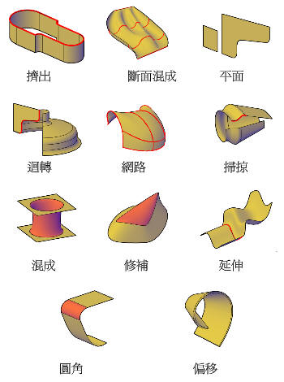
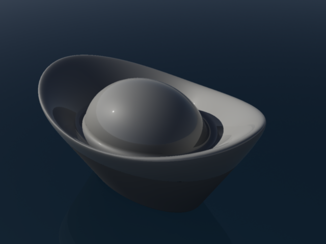

AutoCAD的3D功能日新月異，除了2010之前版本所提供的3D實體和網面物件之外，現在又加入了新玩意 程序曲面。
使用曲面來建模可以讓你的3D模型保有更多的彈性，其中可使用關聯式群組進行編輯(這真是太神奇了)。
最後等到成品出爐後還可以增厚或轉為3D實體，對於日後的3D建模可以一大幫助!!
建立曲面概述
曲面塑型可讓使用者將多個曲面做為一個關聯式群組進行編輯，或以形式更自由的方式編輯曲面。
程序曲面可為關聯式曲面，保持與其他物件之間的關係，以便將其做為一個群組進行操控。
選擇曲面建立方法
可使用以下方法建立程序曲面:
透過 EXTRUDE、LOFT、PLANESURF、REVOLVE、SURFNETWORK 和 SWEEP，使用由直線和曲線構成的輪廓造型建立曲面。

曲面範例

之前有使用過LOFT指令來建立金元寶，這次特別使用曲面來建立銀元寶，效果真的是出奇的好，有興趣的朋友可以一起來練習看看~
[影片]AutoCAD 2011 Surface曲面範例-銀元寶
http://autocad.bestoforum.net/t8924-topic
資料參考:AutoCAD 2011說明
http://docs.autodesk.com/ACD/2011/CHT/filesAUG/WS73099cc142f487557bfaa8da122ec01152f-ef9.htm